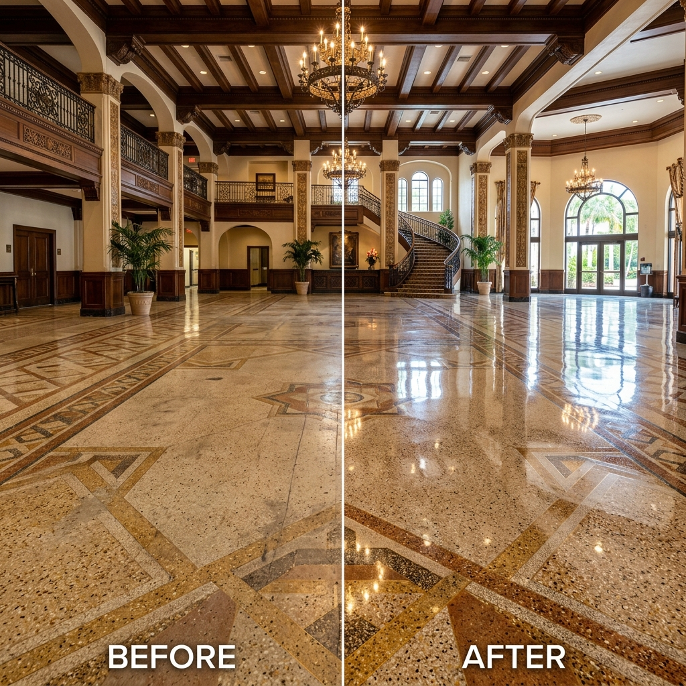

Walk into any Art Deco hotel lobby on Miami Beach, any mid-century office building in Coral Gables, or any government building in downtown Fort Lauderdale — and chances are you're standing on terrazzo. For more than seven decades, terrazzo has been South Florida's signature floor surface, prized for its durability, beauty, and unmistakable character.
Yet despite terrazzo's legendary resilience, decades of wear, improper maintenance, and environmental exposure take their toll. Floors lose their reflectivity. Cracks form along divider strips. Carpet adhesive from a 1990s renovation still clings to the surface. And too often, property managers conclude the only option is to rip out the original terrazzo and install something new.
That conclusion is almost always wrong — and expensive.
Professional terrazzo restoration in Miami can return even severely deteriorated terrazzo to its original condition at a fraction of replacement cost. Whether you manage a commercial lobby in Brickell, a medical office in Broward County, or a retail space in Fort Lauderdale, understanding the terrazzo restoration process — and why it nearly always outperforms replacement — is essential to making the right decision for your property.
What Is Terrazzo? Understanding South Florida's Signature Floor Surface
Terrazzo is a composite material created by embedding chips of marble, glass, quartz, granite, or other aggregates into a cementitious or epoxy binder, then grinding and polishing the surface to a smooth, monolithic finish. The word itself comes from the Italian word for "terrace" — a nod to the material's origins with Venetian construction workers in 15th-century Italy who repurposed leftover marble chips for terraces and patios.
Terrazzo arrived in South Florida during the Art Deco building boom of the 1920s and 1930s, when architects embraced it for its aesthetic versatility and structural durability. It became the default floor surface for Miami Beach hotels, government buildings, schools, hospitals, and commercial lobbies throughout the mid-20th century. Today, thousands of South Florida commercial buildings still contain original terrazzo — much of it 50 to 80 years old.
The terrazzo chip composition varies by era and specification. Earlier installations used primarily marble chips in a Portland cement matrix, while later versions incorporated glass chips, mother of pearl, and colored aggregates for decorative effect.
Cementitious Terrazzo vs. Epoxy Terrazzo
Understanding the distinction between epoxy terrazzo vs cementitious terrazzo is critical for restoration planning:
Cementitious terrazzo is the traditional system used in most South Florida buildings built before 2000. It consists of marble or aggregate chips set in a Portland cement binder, typically installed 1/2" to 5/8" thick over a sand cushion or bonded directly to the concrete slab. These floors are inherently porous, which makes them susceptible to moisture migration — a significant factor in South Florida's humid climate. Metal divider strips (brass or zinc) separate sections and control cracking.
Epoxy terrazzo is the modern system, installed as a thinner 1/4" to 3/8" coating directly over concrete. It uses an epoxy resin binder instead of cement, producing a denser, less porous surface. Epoxy terrazzo offers more vibrant color options and is common in new construction and renovation projects.
Most terrazzo restoration in Miami and South Florida involves cementitious terrazzo, simply because the majority of existing commercial buildings with terrazzo floors were built during the mid-century era. The restoration approach differs significantly between the two systems — an experienced terrazzo specialist will identify the type before recommending any process.
Terrazzo is uniquely suited to South Florida's commercial environments. It handles heavy foot traffic without soft-surface wear, resists moisture when properly sealed, and maintains a professional appearance decade after decade — provided it receives appropriate care and periodic restoration.
Can Terrazzo Floors Be Restored? (Yes — Here's the Evidence)
One of the most persistent myths in commercial property management is that damaged, dull, or stained terrazzo floors must be replaced. In the vast majority of cases, this is simply untrue. Professional terrazzo floor refinishing in Miami can address virtually every common form of terrazzo deterioration.
Types of damage that CAN be restored:
- Surface dullness and loss of reflectivity — resolved through diamond grinding, honing, and polishing
- Scratching and wear patterns — removed during the multi-step grinding sequence
- Staining and discoloration — treated with poulticing, chemical cleaning, or grinding below the stain depth
- Hairline and moderate cracking — filled with color-matched epoxy
- Chip loss or spalling — repaired with matching aggregate and epoxy filler
- Lippage between sections — leveled during the grinding process
- Carpet adhesive and old coatings — removed with heavy-duty diamond tooling
- Wax buildup and yellowing — stripped and eliminated during surface preparation
Types of damage that may require partial replacement:
- Severe structural cracking caused by slab failure (not cosmetic cracking)
- Missing or demolished sections where terrazzo has been entirely removed
- Areas where moisture migration has caused irreversible delamination from the substrate
Even in cases with localized structural damage, a qualified terrazzo restoration specialist can typically section-repair the affected area rather than replacing the entire floor. The key is proper diagnosis — which brings us to the restoration process itself.
| Factor | Restoration | Full Replacement |
|---|---|---|
| Cost per sq ft | $3 – $8 | $15 – $30+ |
| Timeline | 3 – 7 days (typical) | 3 – 6 weeks |
| Demolition required | None | Full demolition & disposal |
| Downtime | Minimal — phased work possible | Extended — full closure typical |
| Original material preserved | Yes | No — permanently destroyed |
| Waste generated | Near zero | Tons of demolition debris |
| Historic character | Preserved | Lost |
| Result quality | Original floor at peak condition | New floor (may differ in character) |
The Terrazzo Restoration Process: What Actually Happens
Professional terrazzo polishing in Miami follows a precise, multi-step process. Each phase builds on the previous one — skipping steps or using shortcuts produces inferior results that won't last. Here's what a proper terrazzo restoration involves:
1. Condition Assessment & Chip Identification
Before any equipment touches the floor, a qualified specialist conducts a thorough condition assessment. This includes identifying the terrazzo type (cementitious or epoxy), the chip composition (marble, glass, quartz, or mixed aggregate), existing coatings or sealers, the severity and location of damage, and any previous repair history.
This step is non-negotiable. The entire restoration specification — from diamond grit sequence to sealer selection — depends on accurate identification. A company that quotes terrazzo restoration near me without first evaluating the floor's condition is a red flag.

2. Coating & Adhesive Removal
Decades of wax application, improper coatings, paint overspray, and — most commonly in South Florida — carpet adhesive from post-carpet removal must be eliminated before the terrazzo surface can be addressed. This is extremely common in Miami and Fort Lauderdale commercial buildings where carpet was installed over original terrazzo in the 1980s and 1990s.
Heavy-duty terrazzo grinding with coarse diamond tooling (typically 30 to 50 grit) removes these layers, exposing the raw terrazzo underneath. Chemical strippers may supplement the mechanical removal for stubborn adhesives. This phase is often the most labor-intensive step in the entire process.
3. Crack & Chip Repair
Cracks along divider strips, spalled areas, and missing chips are repaired using color-matched epoxy filler. The technician blends epoxy pigments and aggregate to approximate the surrounding terrazzo color and chip pattern. Loose or damaged brass or zinc divider strips are reset or replaced as needed.
Proper crack repair is both functional and cosmetic — unfilled cracks will telegraph through the polished finish, and improperly matched repairs will stand out as visible patches.
4. Diamond Grinding & Honing
This is the core of the terrazzo floor refinishing process. Using planetary grinders with diamond-embedded tooling, the technician progresses through a multi-step sequence from coarse to fine grit:
- Coarse grinding (30–50 grit): Removes surface damage, old coatings, and levels lippage between terrazzo sections
- Medium grinding (100–200 grit): Refines the surface and begins exposing the aggregate pattern
- Fine honing (400–800 grit): Produces a smooth, uniform surface ready for polishing
Each grit level removes the scratch pattern left by the previous level. The objective of terrazzo honing is to produce a consistently smooth surface where the aggregate chips and binder are flush, with no surface scratches visible to the naked eye.
5. Polishing & Crystallization
The final finishing step produces the high-gloss, mirror-like surface that defines restored terrazzo. Two primary methods are used:
Terrazzo crystallization involves applying an acidic crystallization compound (typically containing oxalic acid or aluminum fluorosilicate) to the wet surface while machine-buffing with steel wool pads. The chemical reacts with the calcium carbonate in the cement and marble, creating a hard, reflective crystalline surface.
The alternative, resin-bonded diamond polishing, uses progressively finer diamond pads (1500–3000 grit) to achieve a mechanical polish without chemical crystallization. This method is often preferred for epoxy terrazzo and produces an extremely durable finish.
Either method, when properly executed, produces a floor with mirror-like reflectivity — the hallmark of professional terrazzo polishing in South Florida.
6. Sealing & Protection
The final step is applying a penetrating sealer — a critical protection layer, especially in South Florida's high-humidity environment. Penetrating sealers absorb into the pore structure of the terrazzo, providing stain resistance and reducing moisture migration without altering the surface appearance.
Terrazzo sealing is particularly important for cementitious terrazzo in Miami and Broward County properties, where humidity-driven moisture can migrate through the concrete slab and into the terrazzo. A proper sealer protects against efflorescence, staining, and premature deterioration of the polished finish.
Terrazzo Restoration vs. Replacement: Cost Comparison for Miami Property Managers
The economics of terrazzo restoration vs replacement cost strongly favor restoration in almost every scenario. Here's why:
Restoration typically costs 30–50% of full replacement. For a 5,000-square-foot commercial lobby, the difference can be $50,000 to $100,000 or more. Restoration eliminates demolition costs, disposal fees, new material procurement, and extended installation time.
Beyond direct cost, the terrazzo floor restoration cost in South Florida is further justified by:
- Minimal downtime: Restoration can often be completed in 3–7 days for a typical commercial space, compared to 3–6 weeks for full replacement
- Phased execution: Restoration can be done in sections, allowing the building to remain occupied and operational during the project
- Zero demolition waste: Restoration is inherently sustainable — no material is removed or sent to landfill
- Heritage preservation: Original terrazzo, especially mid-century terrazzo and Art Deco terrazzo in Miami, carries architectural value that cannot be replicated with new installation
According to industry data, properly restored terrazzo can last another 20–40 years before requiring re-restoration — making it one of the most cost-effective floor restoration vs replacement decisions a property manager can make.
How Long Does Terrazzo Restoration Take in South Florida?
One of the most common questions we hear: "how long does terrazzo restoration take?" The answer depends on several factors:
| Project Size | Typical Timeline | Notes |
|---|---|---|
| Small (under 1,000 sq ft) | 2 – 3 days | Single room, corridor, or lobby entrance |
| Medium (1,000 – 5,000 sq ft) | 3 – 7 days | Full commercial lobby, retail floor |
| Large (5,000 – 15,000 sq ft) | 1 – 3 weeks | Multi-area projects, typically phased |
| Campus / Multi-Building | 3 – 6 weeks | Phased schedule across multiple buildings |
Factors that affect timeline include square footage, severity of damage (heavy adhesive removal extends the project), access restrictions in occupied buildings, and coordination with other renovation or tenant improvement work happening simultaneously.
For active commercial properties, phased restoration is the standard approach. Sections of the floor are blocked off and restored sequentially, allowing building occupants to continue operations. Night and weekend scheduling is also available for properties where daytime disruption must be minimized.
Why Terrazzo Deteriorates Faster in South Florida
South Florida's climate and building practices create a uniquely challenging environment for terrazzo floors. Property managers in Miami, Fort Lauderdale, and Broward County often see accelerated terrazzo deterioration compared to drier climates. The primary culprits:
Humidity and moisture migration through the slab. South Florida's water table is high, and relative humidity regularly exceeds 80%. In buildings without adequate moisture barriers beneath the slab, water vapor migrates upward through the concrete and into the terrazzo — causing efflorescence (white mineral deposits), spalling, and sealer breakdown.
Old or failed sealants allowing moisture penetration. Many South Florida historic buildings have terrazzo that hasn't been properly sealed — or re-sealed — in decades. Without a functioning sealer, the porous cementitious terrazzo absorbs spills, foot traffic grime, and moisture, leading to progressive staining and surface degradation.
Decades of improper maintenance. Perhaps the most common cause of terrazzo deterioration in South Florida is well-intentioned but technically wrong maintenance. Repeated wax application builds up a yellowing, traffic-trapping film. Acidic cleaners etch the calcium-based binder. Abrasive cleaning pads scratch the polished surface. Each of these practices compounds over years, leaving a floor that appears ruined but is actually covered in layers of removable damage.
High foot traffic in commercial lobbies. South Florida commercial properties — particularly mixed-use towers, hotel lobbies, and retail centers — see aggressive foot traffic volumes that accelerate surface wear. Sand and grit tracked in from exterior areas acts as an abrasive under foot traffic, gradually dulling the terrazzo finish.
Common Terrazzo Problems in South Florida Commercial Buildings
Dullness & Loss of Reflectivity
The most visible sign of terrazzo wear. Surface reflectivity diminishes as micro-scratches accumulate from foot traffic, improper cleaning, and grit abrasion. Professional terrazzo polishing in Miami restores the high-gloss finish through diamond honing and crystallization — no new material is added.
Surface Scratching & Wear Patterns
Concentrated traffic lanes — elevator lobbies, reception areas, building entrances — develop visible wear patterns where the polished finish has been abraded more aggressively than surrounding areas. Diamond grinding removes these patterns by resurfacing the terrazzo to a uniform profile.
Carpet Adhesive Residue (Post Carpet Removal)
This is arguably the most common terrazzo restoration scenario in South Florida. Thousands of commercial buildings had carpet installed over original terrazzo floors during the 1980s and 1990s renovation wave. When the carpet is eventually removed, the adhesive residue remains — and it cannot be cleaned with conventional methods. Professional terrazzo grinding with coarse diamond tooling is the only reliable method to fully remove carpet adhesive and expose the original terrazzo surface.
Cracking & Lippage Between Terrazzo Strips
Hairline cracks along brass or zinc divider strips are normal in cementitious terrazzo and are easily repaired with color-matched epoxy during the restoration process. Lippage — height differences between adjacent terrazzo sections — is corrected during the diamond grinding phase, producing a flat, monolithic surface.
Staining & Discoloration
Unsealed or poorly maintained terrazzo absorbs spills, cleaning chemicals, and organic stains over time. In South Florida, rust staining from moisture migration is particularly common. Most staining can be addressed through poulticing (for deep stains) or grinding below the stain penetration depth.
How to Choose a Terrazzo Restoration Company in Miami
Not all floor restoration companies have genuine terrazzo expertise. Terrazzo restoration requires specialized knowledge, equipment, and experience that differ significantly from general floor cleaning or even concrete polishing. Here's what to look for when evaluating the best terrazzo restoration company in Miami:
Look for terrazzo-specific experience. A company should have a documented portfolio of terrazzo restoration projects — not just general floor polishing. Ask to see before-and-after photos specifically of terrazzo work in commercial properties.
Ask about technical process. A qualified specialist should be able to explain their chip identification method, grinding sequence (which grit levels they use and why), and crystallization method. Vague answers indicate a generalist, not a specialist.
Expect a proper condition evaluation. Any reputable terrazzo restoration company will insist on evaluating the floor's condition — either through site visit or detailed photos — before providing a quote. The type of terrazzo, existing coatings, damage severity, and square footage all affect the scope and price.
Verify commercial property portfolio. Commercial lobby restoration is fundamentally different from residential work. Equipment, access logistics, scheduling around tenants, and project scale all require commercial-grade experience.
Red flags to watch for:
- Quoting a price without seeing or evaluating the floor
- Using residential-sized equipment on commercial-scale projects
- Unable to identify terrazzo type or chip composition
- Recommending wax-based coatings instead of penetrating sealers
- No references from commercial property managers or facility directors
Frequently Asked Questions
How much does terrazzo restoration cost per square foot in Miami?
Terrazzo restoration in Miami typically costs between $3 and $8 per square foot, depending on floor condition, square footage, and required restoration level. Full terrazzo replacement, by comparison, costs $15 to $30+ per square foot including demolition, disposal, and new installation.
Is terrazzo restoration worth it for older commercial buildings?
Yes. Terrazzo in older South Florida commercial buildings is often higher quality than modern alternatives, made with premium marble chips and durable cementitious binders. Professional restoration returns these floors to original condition at 30–50% of replacement cost while preserving architectural heritage.
Can you restore terrazzo that has been covered by carpet for 20+ years?
Absolutely. Carpet adhesive removal is one of the most common steps in South Florida terrazzo floor refinishing. Professional diamond grinding removes old adhesive, glue residue, and surface damage, revealing the original terrazzo underneath. Most carpet-covered terrazzo floors restore beautifully.
Do restored terrazzo floors require special ongoing maintenance?
Restored terrazzo is low-maintenance. After professional restoration and terrazzo sealing, routine care involves dust mopping and damp mopping with a pH-neutral cleaner. Avoid wax-based products and acidic cleaners. Periodic professional re-sealing every 2–3 years extends the life of the finish.
How do I know if my floor is real terrazzo?
Real terrazzo has visible marble, glass, or quartz chips embedded in a cement or epoxy matrix with irregular chip patterns and metal divider strips between sections. If you scrape a hidden area and see aggregate chips in a cementitious binder, it is likely genuine terrazzo. A specialist can confirm during a condition evaluation.
Ready to Restore Your Terrazzo Floor?
If you manage a commercial property in Miami, Fort Lauderdale, or Broward County with terrazzo floors that need attention — whether dull, stained, cracked, or hidden under decades of carpet — Livane Renovation can help. We specialize in terrazzo restoration, polishing, and refinishing for commercial properties throughout South Florida.
Start Your Restoration Project
Share photos and square footage — we'll evaluate your terrazzo and respond with a restoration plan, not a generic quote.
Serving Miami · Miami Beach · Fort Lauderdale · Broward County · South Florida